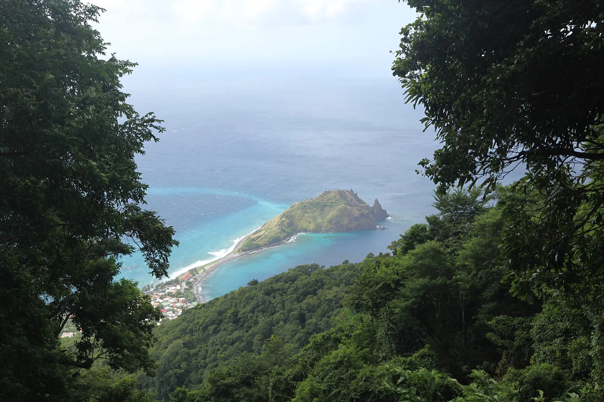

Champagne Reef
Saint Luke, Dominique · snorkeling, plongée

Récif de la côte sud-ouest de la Dominique où des sources volcaniques libèrent des chapelets de bulles le long du fond, comme dans une coupe de champagne. On y accède directement depuis la plage de galets.
- Lieu
- Saint Luke, Dominique
- Niveau
- Débutant
- Activités
- snorkeling, plongée
- Type d'eau
- Mer / océan
- Coordonnées
- 15.24, -61.37 (position approximative du secteur)
Dangers à connaître
- Plage de galets et rochers glissants à l’entrée de l’eau.
- Certaines sorties de gaz sont chaudes : ne plonge pas les mains dans le sable où elles jaillissent.
Le conseil d'Ocean Buddy
Entre dans l’eau avec des chaussons et suis le bord du récif jusqu’aux zones de bulles, par mer calme.
Ouvrir dans Ocean Buddy Télécharger sur l'App Store
Source : Fiche Ocean Buddy · septembre 2026 · à vérifier localement.